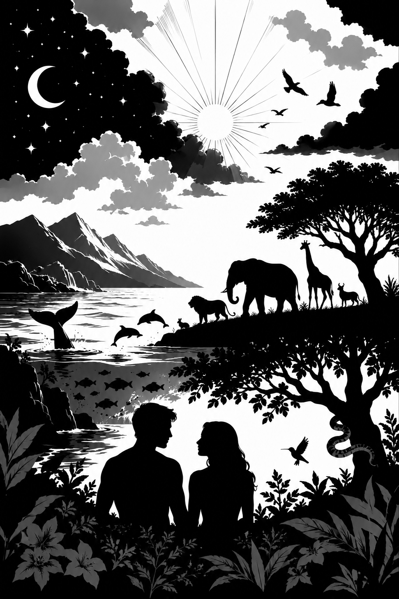

The Library
Every volume grouped by shelf, easiest to hardest.
Old Testament
Old Testament
Ἐν ἀρχῇ ἦν ὁ Λόγος,
καὶ ὁ Λόγος ἦν πρὸς τὸν Θεόν,
καὶ Θεὸς ἦν ὁ Λόγος.
Ἐν τῷ κόσμῳ ἦν,
καὶ ὁ κόσμος δι’ αὐτοῦ ἐγένετο,
καὶ ὁ κόσμος αὐτὸν οὐκ ἔγνω.
We raise Christian readers who can understand both the Word and the world. By learning the Bible and English together, students build biblical knowledge, strong reading skills, and a wider understanding of history and culture — equipping them to think wisely, communicate clearly, and lead in the age of AI.

One finished volume today, and a full path from Genesis to Revelation on the way. Jump into what's ready, or see where each testament is headed.
Unlimited access to every book of the Bible, with up to 3 devices per account. PDFs are sold separately.
Every volume grouped by shelf, easiest to hardest.
200 Bible adventures, Genesis to Revelation, grouped into 13 arcs. Genesis is where we started — everything below is planned, not yet built.